MRTに乗って西門に移動
MRTに乗って西門に移動
{kind=link}
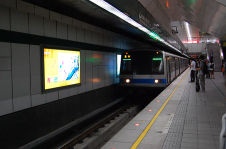
招き猫。結構店の前とかでみかける。{kind=link}
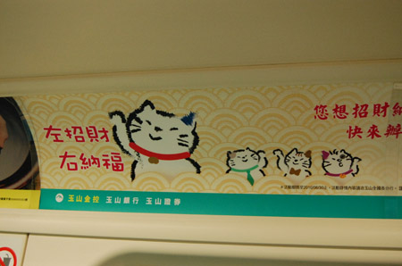
到着したのは「鴨肉扁」鴨と店名前にあるけど、実際にはガチョウをつかってるとな。{kind=link}
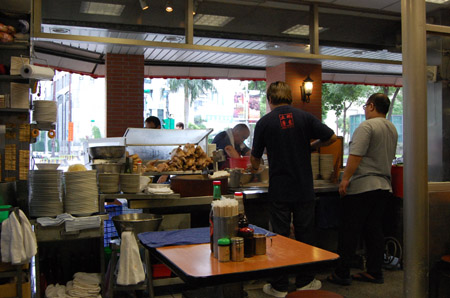
ガチョウ肉とガチョウ肉スープの麺。 肉は骨が多いけど、滋味滋味。麺もとにかくスープの出汁が強烈にうんまい。110NTD(330円）{kind=link}
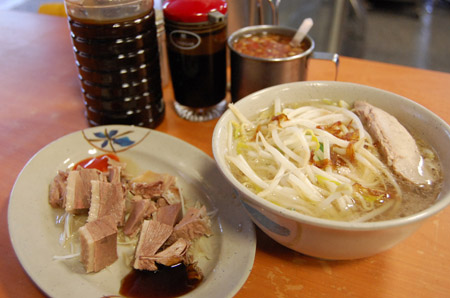
カラスミで有名な店に行ってみる。 おじさま2人のカラスミ攻撃でクラクラしながら2つ購入1100NTD(3300円） 迪化街だと1つ200NTDぐらいからあるんだけど、品質はここのが良い…って聞いてるけどどうなのかなー。 まーそれにしても日本の価格と比べるとべらぼうに安いね。{kind=link}
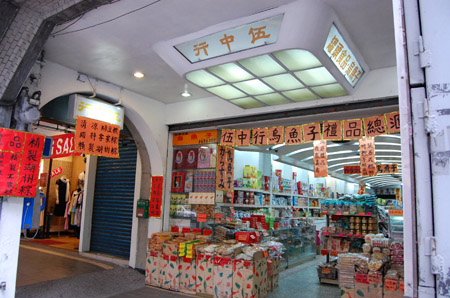
んで、士林まで行って、バスに乗って{kind=link}
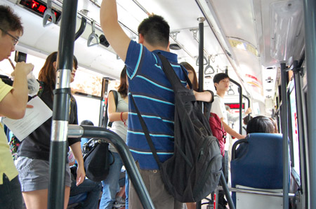
故宮博物院到着。{kind=link}
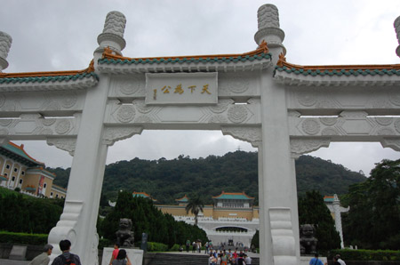
ガウー{kind=link}
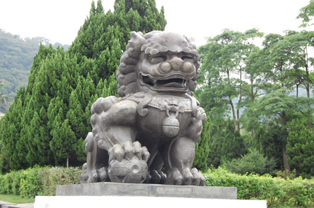
ツアーの団体さんが多くて、有名な白菜とか角煮とかはぎゅうぎゅうな上に、ガラスケースに皮脂がぺっとり。あわわ。 でも、今回、ここに来た目的は青磁を見るため。汝窯の青磁はなかなか見る機会が無いので見たかったのだ。 むー。にしても青磁がたっぷり。 私が、前に来たときは改装前で、写真撮影もOKだったのだけど、今は写真撮影NGになってしまったもよう。{kind=link}
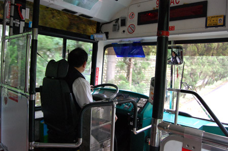
んで、博物館からバスに乗り、MRTに乗り換えて双連駅下車。{kind=link}
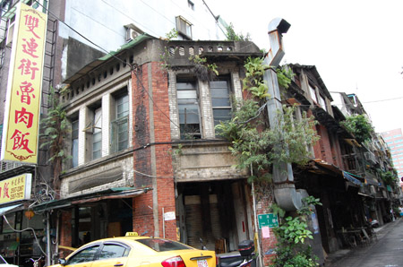
台湾名物。ミニバイクの大群。{kind=link}
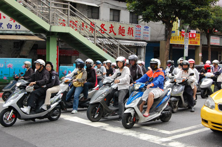
大通りもいいけど、裏通りがたのしいなー。 治安が良い台北の楽しみ。{kind=link}
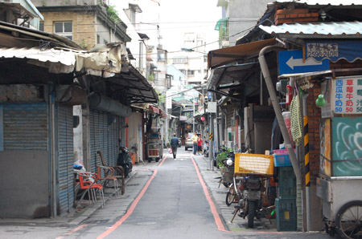
駅から20分くらいかけて歩いて{kind=link}
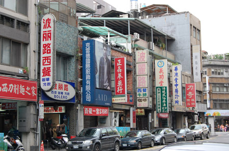
迪化街到着。 なんかベルギーのグランプラスっぽい建物が連なってる。{kind=link}
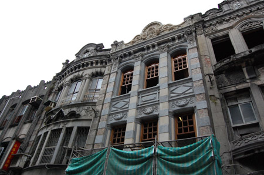
食料品の問屋街なのだけど、怪しいひものも売っていて楽しい。 花茶とか工芸茶とかドライフルーツとかがお安い。 からすみも、なんだか異常なくらいに安いのだけど（200NTD。600円ぐらい！）軒先に並べられているのを見ると、鮮度とかが気になっちゃう。{kind=link}
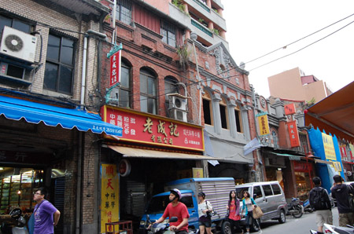
老猫おやすみちゅう。{kind=link}
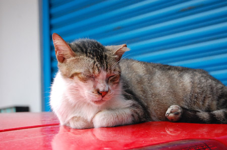
またまた裏道徘徊。{kind=link}
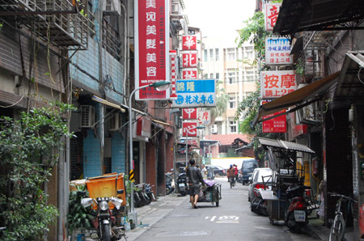
看板を読めばだいたい何屋さんかわかるね。{kind=link}
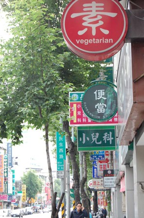
ドミトリー裏に猫カフェ発見。 看板猫。台北は猫カフェが盛んなんだよね。一度くらい行っておけばよかったな。{kind=link}
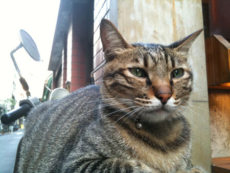
で、また屋台をふらふらのぞきに行って、焼き小籠包の制作妙技に見入る。 ここは、かなり人気の屋台らしく、銀行の順番待ち方式。店の横にある機械で整理券を発行し、屋台上部にある番号になったら注文＆受け取り。 5個で30NTD。60円。 焼きたてを袋に入れてもらって、酢醤油たれとチリソース。 はふはふジューシー。{kind=link}
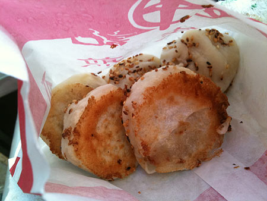
なんだかここも並んでいるから並んでみる「大腸包小腸」すごいネーミングだー{kind=link}
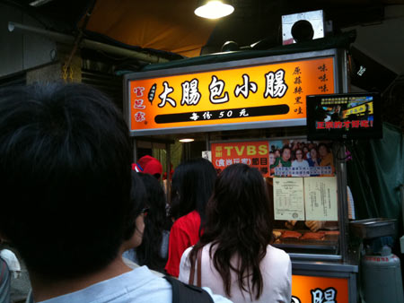
うううううんまい！！ むっちりとした腸詰め餅米を切り開いて、こんがり炙られた中華腸詰め。 高菜だとかキュウリだとかもいっしょにたっぷり。 これ、かなり美味しい！50NTD。150円！{kind=link}
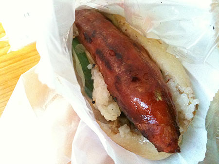
フルーツも買っちゃう。ドラゴンフルーツ（赤）と台湾マンゴー。 台湾マンゴーは宮崎マンゴーに負けない甘さと香り～。 なんてったって、各40NTD!120円。丸ごと買ってればもっと安いよ！{kind=link}
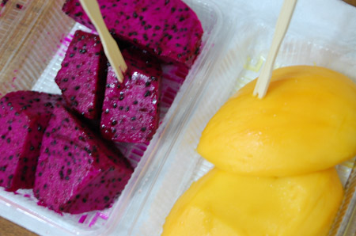
普段はあんまりフルーツ食べないんだけど、あまりにも美味しいのと安いので毎日食べてた。 台湾のしあわせデザート。